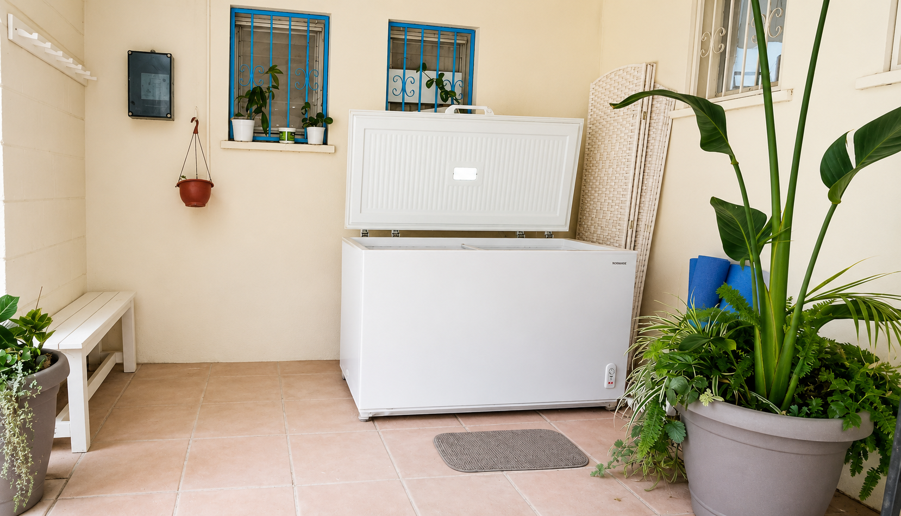

נשימה וחשיפה לקור
לחיזוק הגוף ובניית חוסן
הקור מתחיל להשפיע כבר בהתחלה.
הסקרנות כשמגיעים למפגש, הרתיעה והחשש שממש מרגישים באוויר - הכל חלק מתהליך.
תרגילי הנשימה עוזרים להכין את הגוף, אבל לרוב ברגע הכניסה - הגוף לא ממהר להיכנס למים הקרים.
הרגע הראשון אמנם קשה, והקול בראש צועק "לברוח", אבל עם נשימה, ויד ביד, מחפשים את הנקודה שאפשר להיאחז בה, ובוחרים להישאר גם באי-הנוחות. ואז קורה הקסם.
יש שקט, בהירות, חיות ושמחה, ותחושה של מסוגלות.
חשיפה לקור עשויה לתרום להתאוששות מאימונים, לתחושת ערנות, ולסייע בוויסות מערכת העצבים - יש בנושא גם מחקרים ראשוניים מעניינים, אך מדובר בתחום שעדיין נחקר. ומה שמסקרן אותי באמת הוא דווקא משהו אחר. הבחירה להישאר באי-הנוחות.
היכולת לשבת ברגע הקשה, לנשום דרכו, ולגלות שיש מעבר אליו - זו בעיניי התרומה האמיתית של הקור. בטח במציאות שבה אנחנו חיים היום.
עלות המפגש
השתתפות בסדנה קבוצתית (שעה עד שעתיים, 2-6 משתתפים) - 250 ₪ לאדם.
למתקדמים - טבילה בלבד
שאלות ותשובות
כמה זמן נמשך המפגש?
מפגש אישי או זוגי נמשך כשעה. סדנאות קבוצתיות (עד 6 משתתפים) נמשכות בין 90 דקות לשעתיים, בהתאם למספר המשתתפים.
האם זה בטוח לכולם?
הטבילה באמבטיית קרח אינה מתאימה לאנשים עם מחלות לב או כלי דם, יתר לחץ דם לא מאוזן, אפילפסיה, או לנשים בהריון, וכן במצבים בריאותיים נוספים שבהם חשיפה לקור עלולה להוות סיכון. לפני מפגש ראשון אני עורך בירור קצר על המצב הבריאותי כדי להתאים את המפגש אישית, ובמצבים המצריכים זאת אמליץ להתייעץ עם רופא לפני ההשתתפות.
מעולם לא עשיתי חשיפה לקור - איך מתחילים?
המפגש הראשון כולל הסבר מלא על כל השלבים, וליווי צמוד לכל אורך הדרך. כדאי להגיע עם בגדים נוחים לשלב תרגילי הנשימה, בגד ים ומגבת לטבילה, ובגדים להחלפה.
כל כמה זמן מומלץ להגיע?
התדירות משתנה מאדם לאדם, בהתאם למטרות האישיות - אבל לרוב, פעם או פעמיים בשבוע מאפשרות ליהנות מכל היתרונות של הקור. מומלץ גם לתרגל את הנשימות באופן עצמאי, ויש דרכים לתרגל חשיפה לקור גם באמצעים ביתיים. בשלב מתקדם יותר אפשר להגיע לטבילה בלבד, ללא ליווי בתרגילי הנשימה המקדימים.
אפשר לשלב עם עיסוי משולב?
אפשר לשלב בין שני סוגי הטיפול בהתאם לצורך ולמטרת המפגש.
אילו הסמכות יש לך בתחום?
הליווי בנשימה וחשיפה לקור מבוסס על הכשרה במודולציה עצבית (Neural Modulation).
חוויות מהמפגש
"תודה רבה על הליווי המדהים, אחלה אתגר וחוויה של כולם יחד!"
"תודה שלומי על ליווי מרגיע וחוויה מדהימה ולא צפויה!"
"תודה על החוויה המטורפת, הסבלנות וההקרבה לכל אחד ואחת. יצאתי באורות גבוהים."
"אחד הדברים הכי טובים שקרו לי. בלי צחוק."